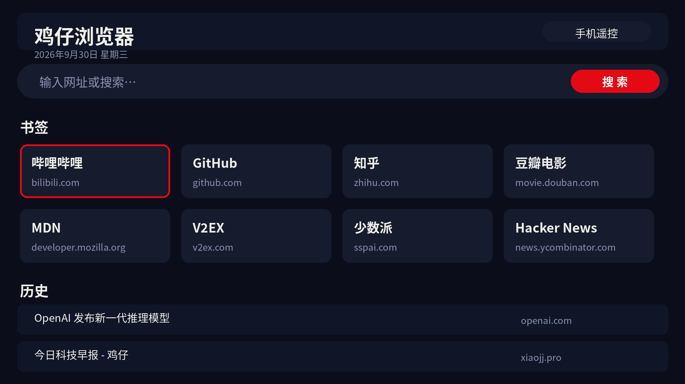
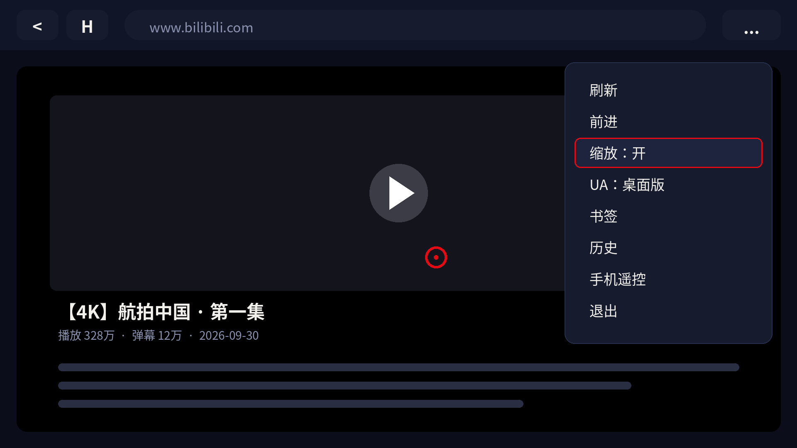

界面预览
以下为界面示意图，实际以电视端运行效果为准

首页 · 搜索框、书签、历史记录，遥控器方向键轻松聚焦

浏览页 · 虚拟光标 + 侧边菜单，OK 键模拟点击，视频自动全屏
功能
专为电视遥控器和沙发场景打磨
🎯
遥控器原生导航
D-pad 方向键移动焦点，OK 键模拟点击，虚拟光标浏览任意网页——再也不用接鼠标。
📱
手机秒变遥控器
电视扫码配对后，手机就是方向键遥控器，还能直接输入文字、一键把网址推到电视上。
🎬
视频自动全屏
检测到网页视频自动切换全屏播放，退出返回浏览页，追剧看球都顺手。
🔖
书签与历史
常用网站一键收藏，浏览历史随时找回，首页直达。
🔍
地址栏 + 搜索
直接输入网址或关键词搜索，桌面 / 移动 UA 一键切换，网页想怎么看就怎么看。
🪶
轻量无广告
安装包仅 1MB，无开屏、无推送、无广告，打开就是浏览器。
安装指南
适用于 Android TV / Google TV（海信 VIDAA 系统暂不支持）
下载 APK
在本页点击下载按钮获取 jizai-tv-browser-0.1.0.apk，拷贝到 U 盘。
允许安装未知应用
电视进入「设置 → 应用 → 特殊应用权限 → 安装未知应用」，给文件管理器开启权限。
用 U 盘安装
把 U 盘插到电视，用文件管理器找到 APK 点击安装。安装完成后在应用列表打开「鸡仔浏览器」。
开始浏览
遥控器方向键移动焦点，OK 键确认；浏览页按菜单键可调出地址栏、刷新、前进、UA 切换。
手机遥控器
同一 Wi-Fi 下，手机扫码即连
📲 配对步骤
- 电视和手机连上同一个 Wi-Fi
- 电视端打开「手机遥控」，显示 6 位配对码和二维码
- 手机浏览器扫码打开遥控页面，输入配对码
- 配对成功：方向键、返回、主页、文字输入、网址推送
⌨️ 文字输入
在电视地址栏需要打字时，手机遥控页面会自动弹出输入框——手机键盘打字，比遥控器一个个选字母快十倍。看到好文章想投到电视上？在手机页面粘贴网址，一键推送。
🔒 安全提示：手机遥控通过局域网 HTTP + WebSocket 连接电视，仅在你信任的 Wi-Fi（家里）或 Tailscale 内网使用。请勿在公共 Wi-Fi 或开放网络下开启配对。
免费下载 · 无广告
测试版 0.1.0，欢迎试用并反馈。当前版本尚未完成海信真机验证，遇到问题请告诉我。
⬇ 下载 APK（约 1 MB）
包名
com.jizai.tvbrowser
版本 0.1.0 (1)
SHA-256 1e4ebb88d87adfd0107148152d14078463e7f0649ec3d3ede112df4736a724a6